戒茂斯上嘉明湖
記錄
-
P 提議 2025-01-16 一起去嘉明湖。
2024-05-20 -
計劃
在這之前，所有三天以上的行程都是獨自出發。一來時間彈性，可以看完天氣預報後再送出入園入山申請；二來速度隨性，反正要快也快不起來，完全照上河速度前進。這次行程將跟團隊一起走四天三夜，從戒茂斯上嘉明湖，再從向陽回到池上。原本預計是七人團，中間陸續有人退出，直到出發前一天變成兩人團。Y 臨時有事、Z 不想太晚回到台北（其他人不想飛奔下山，希望越晚越好）、Q 擔心下雪危險、S 因為刀傷（據說是為了切一顆傷心的酪梨，酪梨心直接分成兩半，刀子就直接劃到掌上，所以最後跟 P 在台東玩了四天沒上山）。還好 E 最後一起出發，不然就要來次非自願性獨攀了。
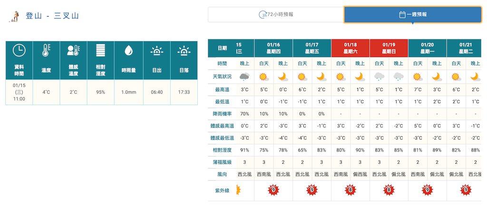 預報有三天的好天氣！ 時值冬季，出發前嘉明湖步道已經下過雪。因為沒走過雪地，出發前找了些雪地影片來看。E 說簡易冰爪足夠應付，加上後來看到張元植的 《冰爪選擇與使用指南》 ，最後買了組 Neturehike 的簡易冰爪。出發前參考 嘉明湖大小事 的消息跟天氣預報，氣溫回升加上連續三天的好天氣，估計遇到積雪的機會很小。但心中默默打定主意：如果沒辦法走，就原路撤回戒茂斯山登山口。
-
D1
2025-01-16 -
南港車站
06:40今天的第一個任務是搭上往池上的火車。因為窮緊張的個性，擔心一早南港展覽館車次太少而延誤，所以提前出門搭公車。抵達昆陽站後還一度想走到南港火車站（因為這是確定可準時抵達的方式），不過最後還是選擇搭捷運到南港火車站。上火車入座後就開始昏睡，醒來時已接近池上，這才發現 E／P／S 都在前一個車廂。
-
池上車站
10:25在池上簡易地用過晚餐後就搭上往戒茂斯登山口的接駁車。接駁大哥提到嘉明湖步道有手作維護步道的活動，還秀了一下自己帶「行李箱」去嘉明湖步道的相片。
-
戒茂斯山登山口
12:20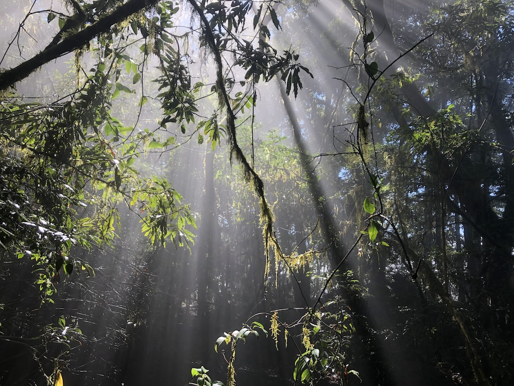 林中的光影。 接駁大哥幫拍了出發前的合照，當初因為想在山上蓋生態廁所，所以在登山口蓋了亭子，並有帶木屑上山的活動，不過後來生態廁所也沒蓋出來。向陽登山口一側則有背土上山換紀念品的活動。
出發時非常潮濕，不過高度也接近雲頂了。後來走到接近雲層頂端時，雲霧時聚時散，光景變幻莫測。因為是在雲頂附近，當雲散開的瞬間陽光立時灑下形成光柱，霧氣也迅速地被蒸發。所以手機得拿在手上待命，光柱一出現就立刻拍下。
-
戒茂斯山
14:50 -
新武呂溪營地
17:20到新武呂溪時已有一些帳篷，還有人躲在大石塊下，頭燈的亮光從一片漆黑中四處張望。脫掉鞋襪赤腳過溪，溪水冰冷刺骨，還好水流不急，水深約四十公分，所以很快就過去了。在溪邊擦乾腳穿上鞋，往前走幾十公尺後就地紮營。隔天才發現，還得往上走一小段才會到真正的新武溪營地。溪邊營地沒有訊號，不過再往上走一段偶爾能連上網路。天黑後營地邊出現一對眼睛，隨後很快地繞著營地飄了半圈，最後到眼前跟我對，才發現是一隻黃鼠狼。經過牠的檢驗，食物包在防水袋裡應該夠隱密吧！
-
D2
2025-01-17 -
新武呂溪營地
08:40在溪邊紮營果然容易返潮，一早起床就拿壓縮毛巾把帳篷裡裡外外擦過一遍。
對出發時間點印象模糊。
-
排球場營地
10:46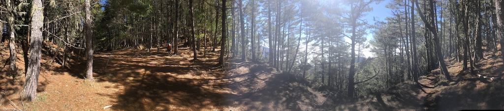 排球場營地。 -
足球場營地
11:00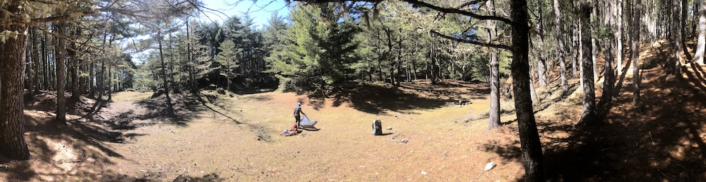 在足球場營地晒帳篷。 足球場營地看起來又大又舒服，可惜附近沒有水源。我們在這晒起帳篷跟解決中餐。
-
高爾夫球場營地
12:13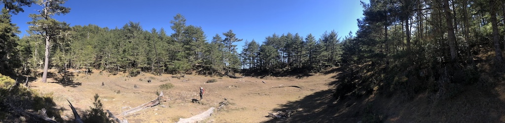 高爾夫球場營地。 -
嘉明妹池
14:00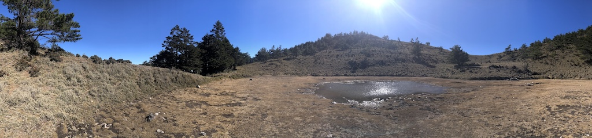 嘉明妹池。 -
獵寮營地
15:30到營地之前， E 就提過紮營後想直接輕裝上嘉明湖。我紮完營本來想就地放空，後來還是問了句：「幾點要出發？」E 事後表示，這個時候她本來也不想動了，但是經我一問，覺得不立刻出發就不會出發了，所以…就立刻出發。一開始找不到路，在箭竹間亂鑽，最後又回到溪邊。沿著溪邊又往上走才發現布條，也還好今天先走一趟，不然明天凌晨要摸黑找路一定很崩潰。E 卸下重裝後健步如飛，我因為把登山杖留在營地，加上體力不濟，走得挺吃力。
-
嘉明湖
16:22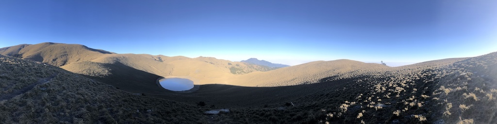 嘉明湖右方的草原上有我們的影子。 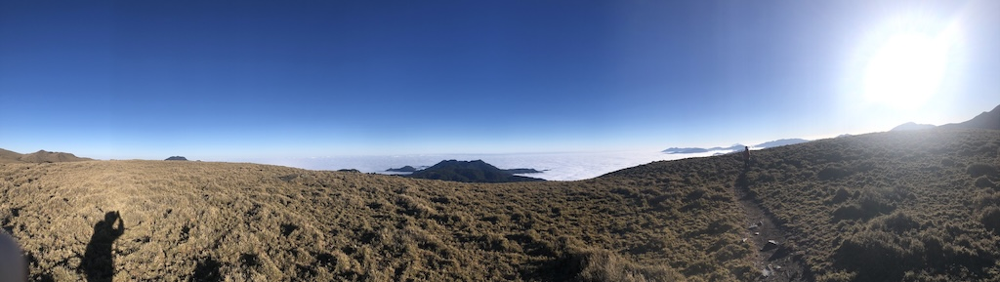 回程時的雲海。 在高原處遇到早上就碰過面的山友，他輕裝從新武呂溪營地來回嘉明湖，這時正要下山，看來是一定要摸黑了。我們在湖的外圍跟草原上拍照，還能在湖邊的草原上找到自己的影子。不想摸黑下山，所以感歎完壯麗的雲海後就匆匆離開。也因為隔天還會再來一趟，所以沒有走到湖邊，結果這次行程就只有「擦過」嘉明湖了。
-
獵寮營地
17:15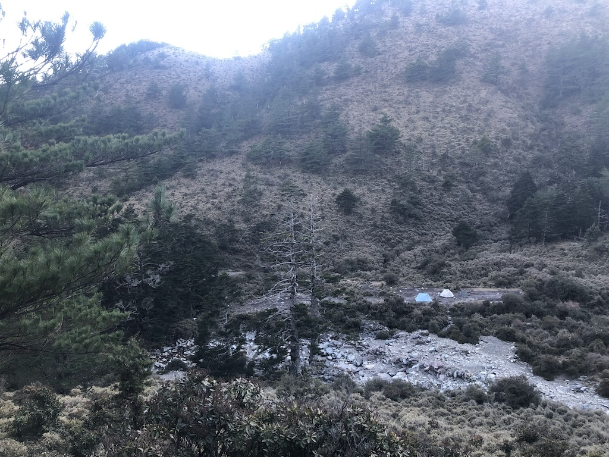 我們的帳篷。 天剛黑的時候非常冷，濾水時碰到水手都會痛。今天也遇到一隻黃鼠狼，還好我的晚餐沒什麼吸引力。早早解決晚餐就躲進帳篷，天黑後還有一兩個隊伍剛到營地。快九點時起床小便，帳篷外滿天星斗，還意外收到一顆流星。這個時候也不怎麼冷了，風也沒想像中大。
-
D3
2025-01-18 -
獵寮營地
05:48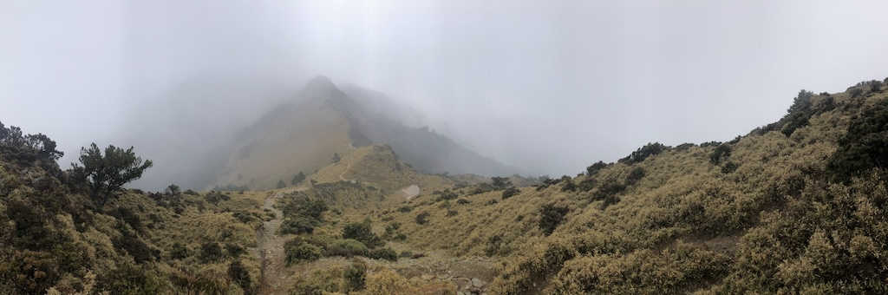 天候不佳，雲霧繚繞，山巒依舊引人入勝。 原本計劃摸黑上山，到嘉明湖邊看日出，所以早早起床收拾。半夜氣溫頗低，帳篷邊的沙土都結冰了，放在前庭的水袋也不能悻免。最糟的是帳內結霜，拿壓縮毛巾擦了一輪，手指凍到會痛。收拾完後快速解決早餐，這時天空依舊晴朗。不過上山途中雲霧開始聚集，到嘉明湖時已是濃霧一片。天候不佳也就沒再往湖邊移動，連帶著也沒上三叉山，暗自慶幸昨天已先上來一趟。經過三叉山山腳後路面的石頭漸多，因為結冰的關係，走起來越來越滑。到另一邊的登山口後，終於決定穿上冰爪，好走了不少。沿路上沒有殘雪，頂多就路邊還有零星幾塊。整條步道土石混合，似乎能理解為什麼建議用簡易冰爪走這段路就好。
-
嘉明湖山屋
09:00花三個多小時抵達嘉明湖山屋，報到後開始耍廢等天黑（但是還沒到中午）。後來實在太無聊就躺著發呆，還羨慕起帶書來看的山友。下午聽說上山的路都結冰了，有登山團整團上不來，結果熊出沒的協作就把晚餐分給山友們，跟我自己準備的食物比起來簡直是五星級嚮宴。吃飽後也早早就寢，跟 E 研究天氣預報後，決定隔天在正午前抵達向陽山三角點。山屋就剩兩隊共四人了，難得的安靜。
-
D4
2025-01-19 -
嘉明湖山屋
10:30悠閒的吃完早餐收完裝備穿好冰爪，跟管理員打個招呼就出發了。前進不到一百公尺就決定脫掉冰爪，因為路上只剩泥濘。
-
向陽山
12:00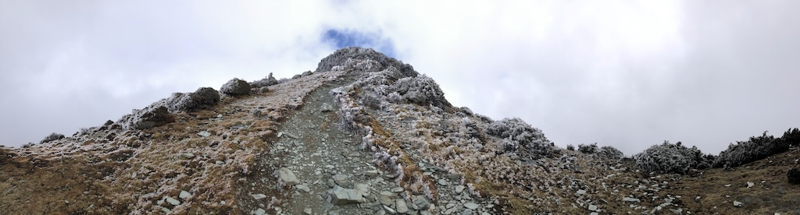 向陽山。 前一晚的氣象預報顯示向陽山十二點過後才會開始放晴，但是因為要趕路下山，所以預計只在十二點到十二點半之間待在山頂碰運氣。上山途中冰還沒化，奇形怪狀的冰柱似乎是水氣加強風的傑作。到山頂後四面白牆，等待雲層散開，利用露出的一小片藍天拍了幾張照片。雖然沒有完全放晴，但靠著中央氣象局的預報，還是讓我們看到偶爾露出的太陽。
-
向陽名樹
13:53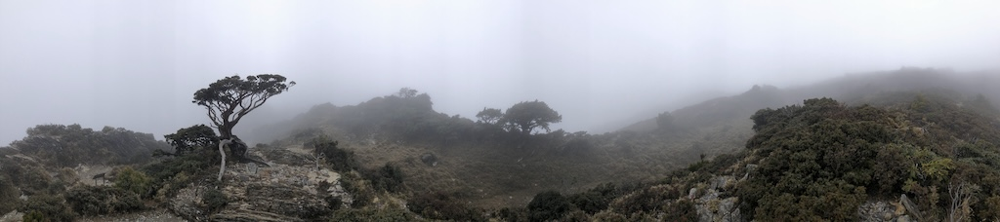 向陽名樹。 -
向陽山屋
14:50一路在薄霧中行進，到向陽山屋時正準備悠哉地休息。才坐下沒多久，管理員就來提醒要注意時間，因為昨晚公路有落石，所以傍晚會管制車輛通行。我們立刻把所有的裝備包回去，趕緊下山。
-
向陽登山口
16:18 -
溫暖的家
01:17